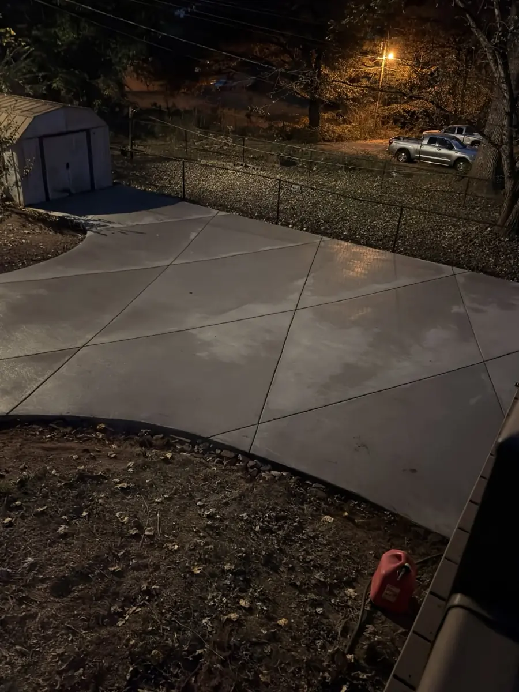
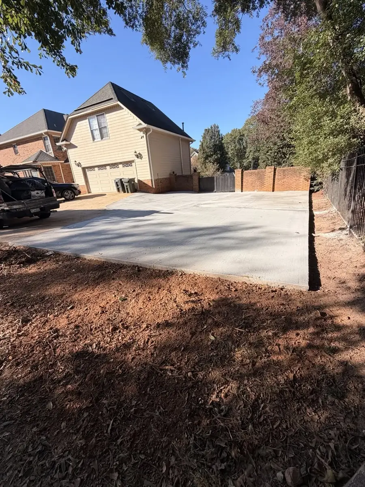
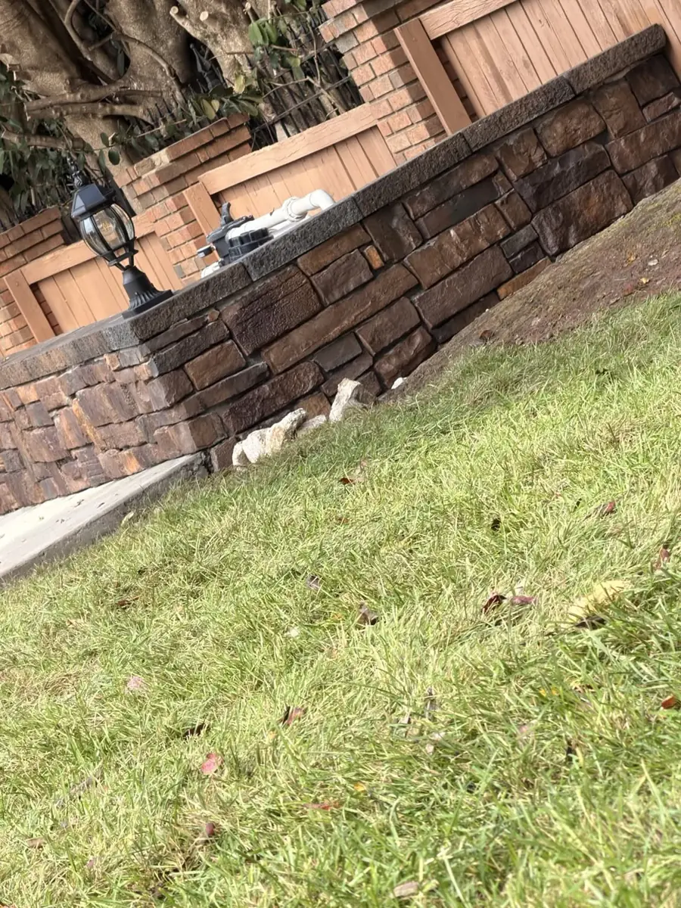
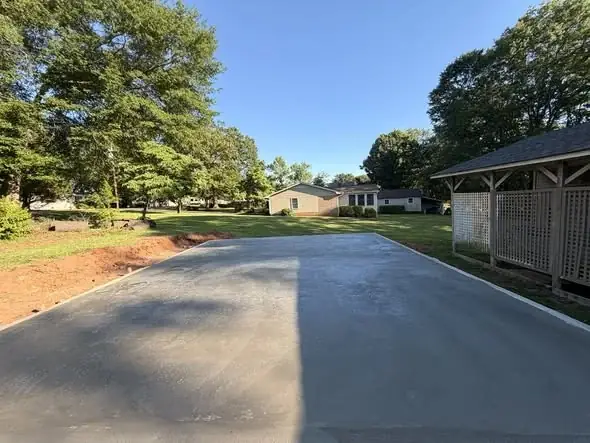
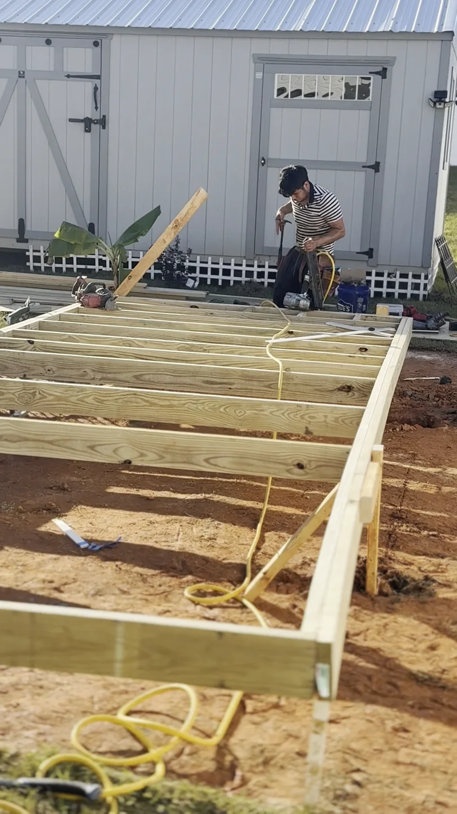

Concrete transformation: before & after
See three views before the work and four photos of the finished concrete, curved edges and walkways.
Photos, progress and moments from our projects across Upstate South Carolina.

In focus / ConcreteExplore the project ↗See three views before the work and four photos of the finished concrete, curved edges and walkways.
View before & after →Choose a service to see photos and videos.
See three views before the work and four photos of the finished concrete, curved edges and walkways.

5 photos + videoTwo views of the finished concrete area, followed by preparation and placement from this EBC project.

2 photos + videoThe finished retaining wall and lawn, plus a look at the yard before our work. The existing pool is shown for context.

3 photos + videoA finished backyard concrete slab with photos of the site preparation and equipment at work.

3 photos + videoA closer look at the framing and boards as this outdoor space takes shape.
 3 photos + video
3 photos + videoSod installation around a residential backyard. Follow the work up close.
 3 photos + video
3 photos + videoOur crew welding on site.
 3 photos
3 photosThree views of a concrete patio extension alongside the home.
 3 photos + video
3 photos + videoSee the finished driveway, curved edges and joint layout.
 3 photos
3 photosA curved block wall with integrated lighting along the yard.
No projects match these filters.
Tell us what you have in mind.
Explore our projects from several angles, with design previews and videos.
Explore project stories